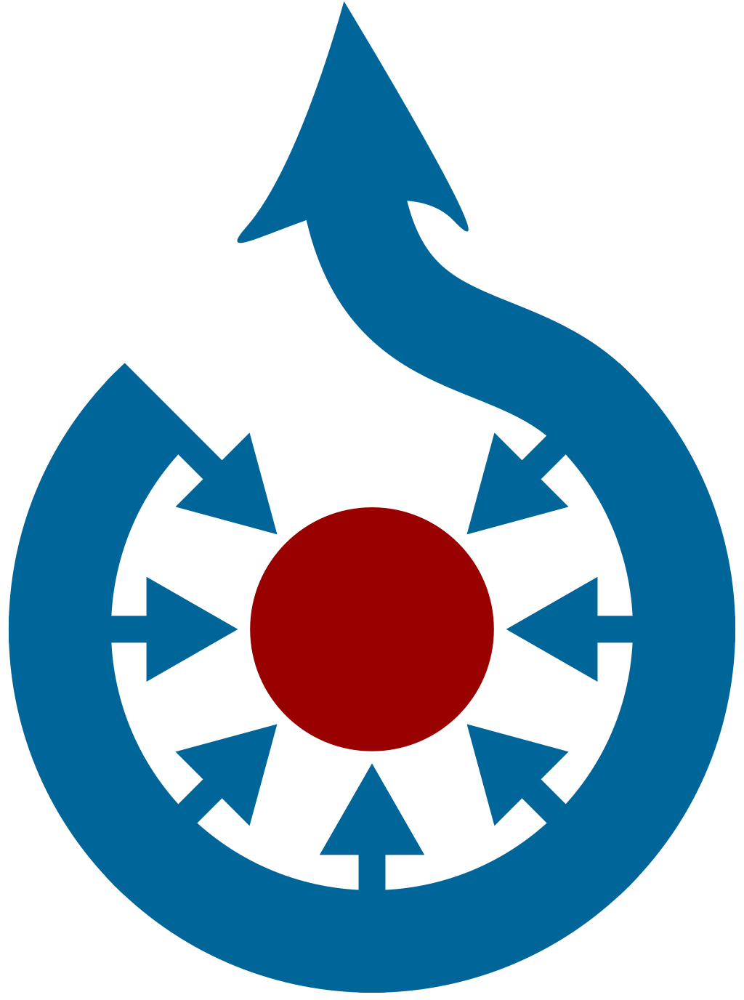
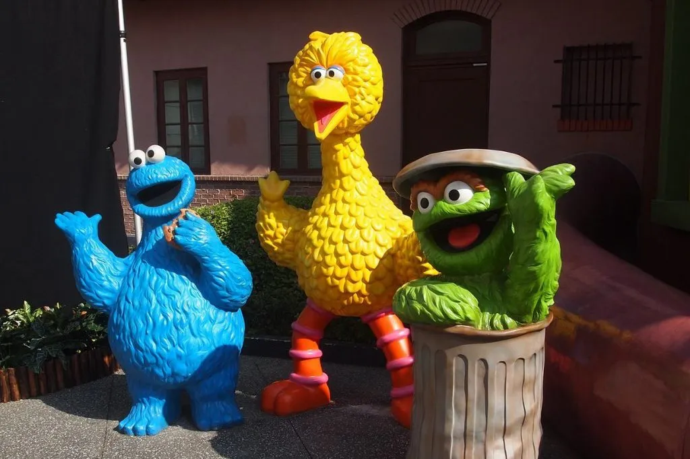

The nonprofit Wikimedia Foundation provides the essential infrastructure for free knowledge. We host
Wikipedia, the free online encyclopedia, created, edited, and verified by volunteers around the world, as
well as many other vital community projects. All of which is made possible thanks to donations from
individuals like you. We welcome anyone who shares our vision to join us in collecting and sharing knowledge
that fully represents human diversity.
1
Wikimedia projects belong to everyone
You made it. It is yours to use. For free. That means you can use it, adapt it, or share
what you find on Wikimedia sites. Just do not write your own bio, or copy/paste it into your homework.
2
We respect your data and privacy
We do not sell your email address or any of your personal information to third parties.
More information about our privacy practices are available at the Wikimedia Foundation privacy policy,
donor privacy policy, and data retention guidelines.
3
People like you keep Wikipedia accurate
Readers verify the facts. Articles are collaboratively created and edited by a community of
volunteers using reliable sources, so no single person or company owns a Wikipedia article. The
Wikimedia Foundation does not write or edit, but you and everyone you know can help.
4
We respect your data and privacy
The word “wiki” refers to a website built using collaborative editing software. Projects
with no past or existing affiliation with Wikipedia or the Wikimedia Foundation, such as Wikileaks and
wikiHow, also use the term. Although these sites also use “wiki” in their name, they have nothing to do
with Wikimedia.
280,000+
editors contribute to Wikimedia projects every month
100+ million
media files on Wikimedia Commons and counting
1.5 billion
unique devices access Wikimedia projects every month
Collaborative projects are the core of the Wikimedia movement
Our volunteers build tools, share photos, write articles, and are working to connect all the knowledge
that exists.

Wikipedia
Free encyclopedia written in over 300 languages by volunteers around the world.

Wikimedia Commons
The worlds largest free-to-use-library of illustrations, photos, drawings, videos and music.
Vitor Mazuco
Editor since 2009, Wikimedia community
May Hachem
Editor since 2013, Wikimedia community

Christine Meyer
Editor since 2007, Wikimedia communityr
Throughout history, knowledge has been controlled by a powerful few. Wikipedia needs knowledge from all languages and cultures. The internet has become the default for accessing information—women, people of color, and the global south remain underrepresented. We invite you to help correct history.